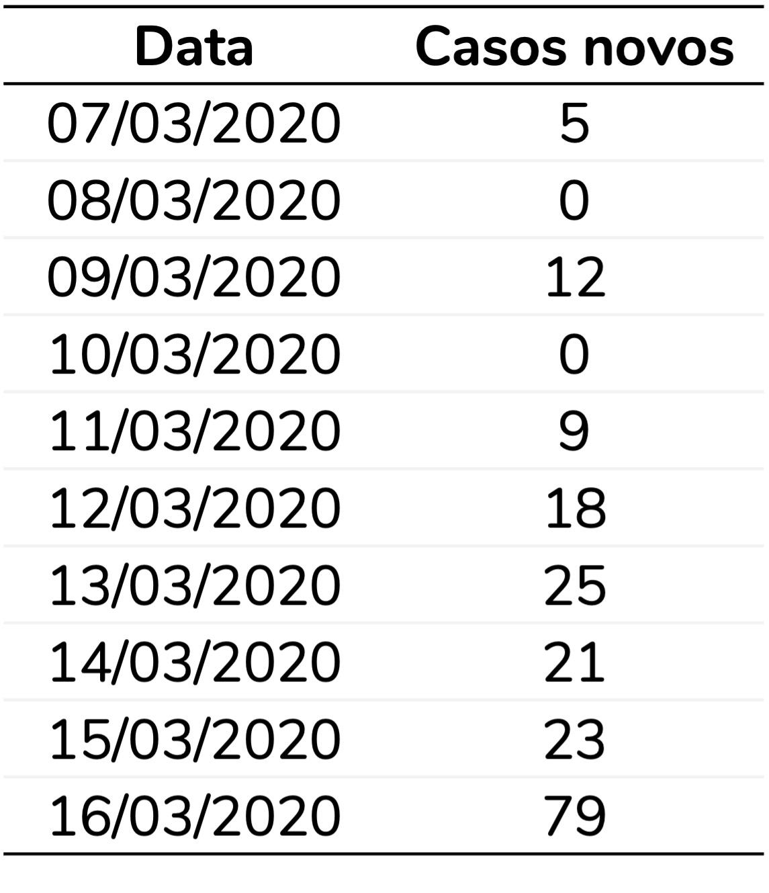
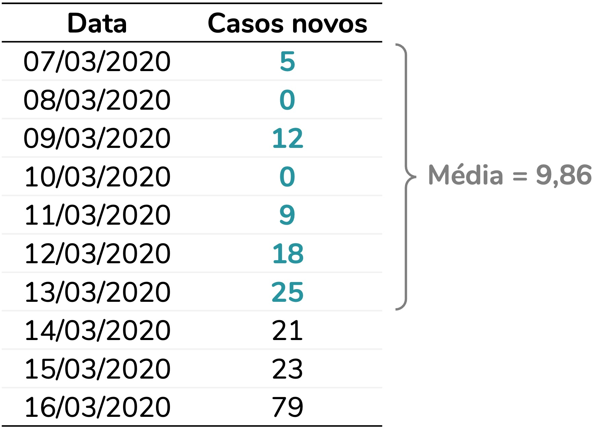
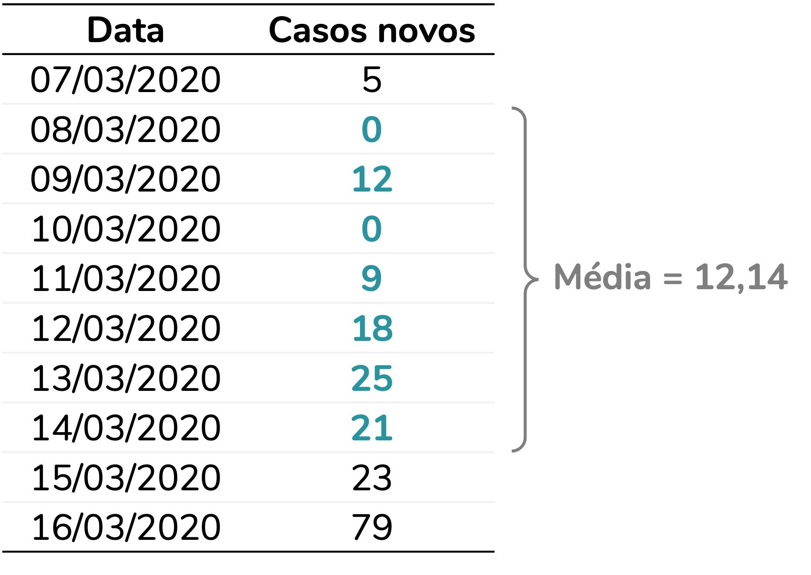
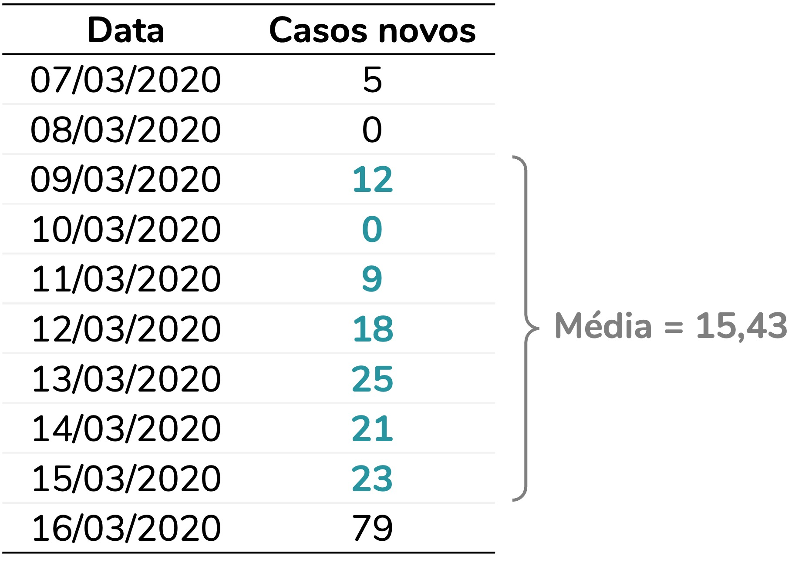
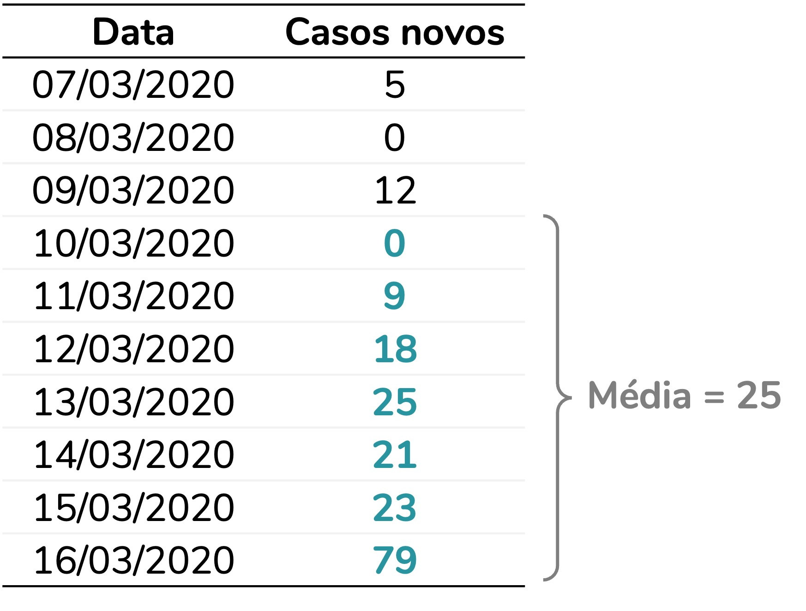
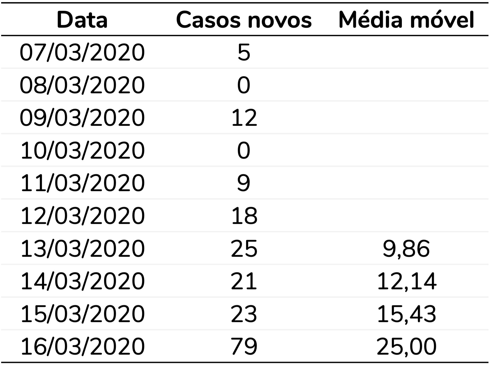
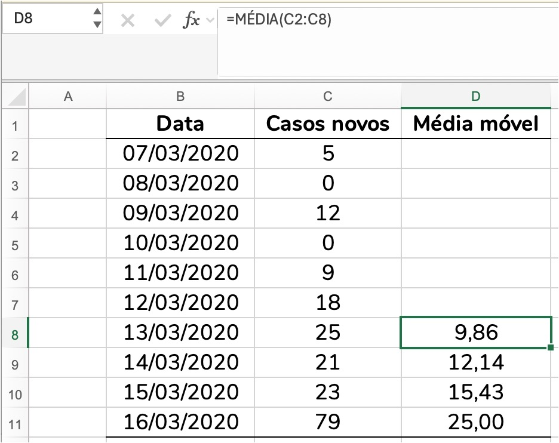

Fonte da imagem: elaboração própria
Média móvel era um conceito que nunca tinha feito parte da minha realidade, até que chegou 2020. E com ele, a pandemia de COVID-19 e os gráficos com quantidade de casos e suas médias móveis em todos os telejornais do país.
Foi aí que eu fiz questão de entender essa medida – inclusive para explicá-la, como eu fiz nesse post do meu Instagram.
Os anos se passaram, a popularidade da média móvel diminuiu, mas eventualmente eu atendo algum cliente que precisa calculá-la. E sinto falta de um material mais estruturado que explique o que é uma média móvel e qual o cálculo por trás dessa medida. Então, a proposta deste post é preencher essa lacuna.
Por que calcular uma média móvel?
Na minha opinião, o exemplo da quantidade de casos novos de COVID-19 segue sendo o mais didático. Então, vamos a ele. Em julho de 2020, o cenário era esse:

A partir de 11 de março, novos casos de COVID-19 eram registrados todos os dias no Brasil. O maior pico do período foi o registro de 67.860 casos novos em 23 de julho.
No entanto, há uma grande flutuação na quantidade de casos novos. No gráfico de linhas, observamos subidas seguidas de quedas. Perceba como a quantidade de casos novos varia muito de um dia para o outro, ao redor da data do pico (23/07):
Data | Casos novos | Dia da semana |
|---|
18/07/2020 | 34.177 | Sábado |
19/07/2020 | 28.532 | Domingo |
20/07/2020 | 23.529 | Segunda-feira |
21/07/2020 | 20.257 | Terça-feira |
22/07/2020 | 41.008 | Quarta-feira |
23/07/2020 | 67.860 | Quinta-feira |
24/07/2020 | 59.961 | Sexta-feira |
25/07/2020 | 55.891 | Sábado |
26/07/2020 | 51.147 | Domingo |
27/07/2020 | 24.578 | Segunda-feira |
28/07/2020 | 23.284 | Terça-feira |
29/07/2020 | 40.816 | Quarta-feira |
Há um padrão de aumento e queda que se repete, aproximadamente, a cada sete dias. Em geral, quantidades menores de casos são observadas às segundas e terças, enquanto quantidades maiores são registradas entre quinta e sábado.
Essa variação não representa necessariamente uma flutuação real na quantidade de novos casos em cada dia. A principal hipótese levantada na época era um atraso na notificação dos casos e no processamento dos resultados dos testes, fazendo com que os registros se concentrassem em determinados dias da semana.
A questão é que essa flutuação atrapalha a análise da tendência dos dados. Ao olharmos para o gráfico, temos dificuldade de identificar se a quantidade de casos está aumentando ou diminuindo. Esse é exatamente o tipo de situação em que a média móvel pode ser mais informativa.
O que, afinal, é uma média móvel?
Ainda que o nome não seja dos mais intuitivos, a média móvel é uma sequência de médias calculadas sobre um período fixo de observações. Esse período, também chamado de janela, depende do contexto da análise.
No caso da COVID-19, faz sentido utilizar um período de sete dias, já que os registros apresentam um padrão semanal de aumento e redução de casos. Ao calcular a média dos últimos sete dias, esse padrão é suavizado, facilitando a visualização da tendência da série de dados.
Vamos calcular manualmente uma média móvel para entendê-la. Imagine que temos o seguinte conjunto de dados:

Como o período é de sete dias, a primeira média só pode ser calculada quando o sétimo dia da série é observado. Essa primeira média corresponde à média dos sete primeiros dias:

A segunda média será calculada quando for coletado o oitavo dia. E corresponderá à média dos últimos sete dias. Isso significa que agora a média desconsiderará o primeiro dia e passará a considerar o oitavo:

E assim sucessivamente. A cada novo dia observado, a janela de sete dias desloca-se uma posição para frente, descartando o dia mais antigo e incluindo o mais recente. É justamente esse deslocamento da janela ao longo do tempo que dá origem ao nome média móvel.


Ao final, para essa base de dados, vamos obter as seguintes médias móveis:

A média móvel no exemplo do COVID-19
Ao calcularmos a média móvel (representada pela linha azul no gráfico), obtemos uma série com muito menos flutuações do que os dados originais. Com isso, a tendência fica muito mais nítida. Por exemplo, agora conseguimos observar com mais clareza uma tendência de aumento no final da série de dados.

Como calcular a média móvel no Excel?
Imagine que você tem uma base de dados com um dia por linha e deseja considerar um período de sete dias. Para calcular a média móvel no Excel, insira a fórmula da média (=MÉDIA()) na linha correspondente ao sétimo dia. Nessa célula, a função deve calcular a média dos sete primeiros dias da série.
Em seguida, basta arrastar a fórmula até o final da planilha. A cada nova linha, o Excel ajustará automaticamente as células sendo consideradas no cálculo, fazendo com que a média seja calculada sempre com base nos últimos sete dias:

Como calcular a média móvel no R?
Há mais de uma forma de calcular a média móvel no R. Mas duas funções são razoavelmente populares para esse cálculo: a função rollmean do pacote zoo e a função slide_dbl do pacote slider.
Para os exemplos abaixo, considere que temos a seguinte base de dados:
## data casos_novos
## 1 2020-03-07 5
## 2 2020-03-08 0
## 3 2020-03-09 12
## 4 2020-03-10 0
## 5 2020-03-11 9
## 6 2020-03-12 18
## 7 2020-03-13 25
## 8 2020-03-14 21
## 9 2020-03-15 23
## 10 2020-03-16 79
## 11 2020-03-17 34
## 12 2020-03-18 57
## 13 2020-03-19 137
## 14 2020-03-20 193
## 15 2020-03-21 283
## 16 2020-03-22 224
## 17 2020-03-23 418
## 18 2020-03-24 345
## 19 2020-03-25 310
## 20 2020-03-26 232
## 21 2020-03-27 482
## 22 2020-03-28 502
## 23 2020-03-29 487
## 24 2020-03-30 352
## 25 2020-03-31 323
## 26 2020-04-01 1138
Como citar esse post, nas normas da ABNT
PERES, Fernanda F. O que é uma média móvel?. Blog Fernanda Peres, São Paulo, 01 jul. 2026. Disponível em: https://fernandafperes.com.br/blog/media-movel/.